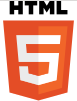

-

HTML
HTML é a principal linguagem de programação encontrada na internet. Cada página HTML tem uma série de elementos que cria a estrutura dos conteúdos de uma página ou de um aplicativo. O HTML é uma linguagem amigável para iniciantes, que possui bastante suporte e é principalmente usada para páginas estáticas:
-

CSS
CSS é a sigla para Cascading Style Sheets, ou seja, Folhas de Estilo em Cascatas. É uma maneira de dar estilo ao código criado por linguagens como HTML, XML ou XHTML, por exemplo. De forma prática, ela funciona como uma camada de personalização ao conteúdo visível
-

JavaScript
JavaScript é uma linguagem de programação que permite a você implementar itens complexos em páginas web — toda vez que uma página da web faz mais do que simplesmente mostrar a você informação estática — mostrando conteúdo que se atualiza em um intervalo de tempo, mapas interativos ou gráficos 2D/3D animados, etc.